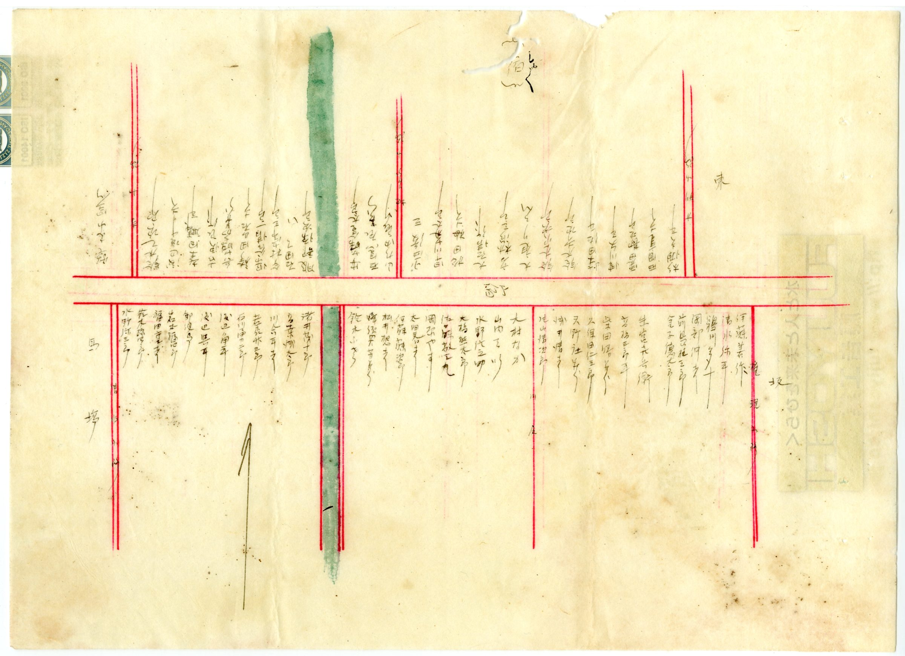

INTRODUCTION見付という町は、土地の上に記憶が重なっている
見付は、旧東海道の宿場町として栄えた町です。東西にのびる街道を背骨に、川原・一本松・西坂・馬場・宿・東坂・三本松といった町が連なり、そこから玄妙小路・宮小路・寺小路・地蔵小路・横町・南小路・清水小路・権現・境松といった小路が枝のように分かれていきます。町の名前そのものが、道のかたちや、神社へ向かう道筋、地形のなごりを今に伝えています。
不動産を見るときも、本来は同じことが言えます。単に「何坪か」「いくらで売れるか」だけでは、その土地の本当の姿は見えてきません。どんな道に面し、どんな家がどう並び、どんな歴史の上にあるのか。古い町ほど、そこに積み重なった記憶が、現在の取引にも静かに影響してきます。
HOUSES明治42年の地図に残る、一軒ずつの家並み
この図がほかの地図と決定的に違うのは、「戸別」――つまり一軒ずつ、世帯ごとに名前が記されている点です。街道や小路に沿って、当時そこに暮らした家々が、びっしりと書き込まれています。赤い線は道、緑の線は町なかを流れる川や用水、そして要所には寺(卍)や神社、町の施設が描かれています。
一枚を眺めるだけで、当時の見付がどれほど人の密度の高い、生き生きとした町だったかが伝わってきます。家と家のあいだの距離、奥に長くのびる敷地、路地のたたみ方。これらは単なる過去の風景ではなく、今の見付の地割にも、かたちを変えながら受け継がれています。

STREETS旧東海道と小路 ― 今も残る道、変わった道
古い地図と現在の地図を重ねると、変わらない道筋と、姿を変えた場所がはっきり見えてきます。見付の場合、東西に走る旧東海道という背骨は今もそのまま町の軸であり続けています。一方で、街道から分かれる細い小路、川沿いの道、寺社へ向かう参道などは、拡幅されたり、付け替えられたり、あるいは今も当時のまま残っていたりと、さまざまです。
これは懐古趣味の話ではありません。古い市街地では、道の幅(幅員)、敷地が道路にどう接しているか(接道)、奥行きの深さといった要素が、現在の不動産取引に直接かかわってきます。昔ながらの細い小路に面した土地、街道に長く面した間口の狭い敷地――こうした「町のかたち」は、売却や建て替えのときに必ず確認すべき論点になります。

THE CORE OF THE TOWN町の中枢 ― 郡役所・登記所・寺社・学校
この図には、当時の見付が単なる住宅地ではなく、地域の中心だったことを示す施設がいくつも記されています。磐田郡の役所(郡役所)、土地や建物の権利を記録する登記所、ものづくりの製造所、学びの場である学校、そして数多くの寺院と神社。見付は、人が集まり、商いがあり、行政や教育の核があった、文字どおりの「町」でした。
なかでも私たちが目をとめるのは、明治四十二年の見付に、すでに登記所が置かれていたことです。土地や建物の権利を記録し、受け継いでいくしくみは、百年以上も前からこの町に根づいていました。相続登記が義務化された現在、私たちが日々向き合っている相続や名義の整理も、じつはこの長い営みの延長線上にあります。土地の価値は、面積や築年数だけでは測れません。その場所がどんな歴史を持ち、どんな人の流れの中にあったのか。地域を知ることは、不動産を正しく扱う第一歩です。
この町の土地は、ただの坪単価では語り尽くせない。
BEFORE YOU LET GO古い家や土地を扱うときに、大切なこと
見付のような歴史ある町では、相続した家、空き家、古い土地を売却する前に、確認しておきたいことが少なくありません。境界はどこか。道路にきちんと接しているか。建て替えはできるのか。上下水道はどうなっているか。解体が必要か、残置物はどうするか。近隣との関係は――。これらを一つずつ丁寧に調べておくことが、売主にとっても買主にとっても、安心できる取引につながります。
古い町の不動産は、価格の多寡だけでなく、こうした「調査の深さ」で結果が大きく変わります。急いで値段を決めることだけが正解ではありません。その土地がどう使われ、どう受け継がれてきたのかを一度整理してから考えることで、納得のいく判断にたどり着けます。
売る前に、まず整理する。
富士ヶ丘サービスでは、磐田市見付周辺の相続不動産・空き家・古い住宅・土地売却のご相談を承っています。すぐに売るかどうか決まっていなくても構いません。まずは、家と土地の状況を一緒に整理するところからお手伝いします。
PLATES 1–17見付町戸別明細図 ― 町別シート一覧
明治四十二年の見付町は、街道沿いの町と、そこから分かれる小路ごとに、十七枚の図に描き分けられています。各シートをクリックすると拡大表示されます。
※ 各図には当時の世帯名など個人にかかわる記載が含まれます。郷土史・都市史の貴重な記録として公開していますが、ご関係者・ご子孫の方で掲載についてお気づきの点があれば、下記までご連絡ください。
SERIES PLAN連載「見付古地図散歩」全5回の構成
- 第1回：見付の土地と記憶（本記事）戸別明細図の全体像から、見付という町の骨格と「土地の記憶」という視点を示す。シリーズの導入。
- 第2回：古い地図に残る家並みと、相続される土地一軒ずつ記された家並みを入口に、相続した家・空き家を「処分」ではなく「受け継いできたもの」として見つめ直す。記事を読む »
- 第3回：旧道・小路・町割り ― 古い町の土地を売るとき、なぜ調査が大切か幅員・接道・再建築・境界・上下水道など、宿場町ならではの売却時の論点を、地図の道筋から具体的に解説。記事を読む »
- 第4回：明治42年、見付の町の中枢 ― 郡役所・登記所・寺社・学校町の施設から、見付が地域の中心だった歴史を語り、土地の価値は面積や築年数だけでは測れないことへつなげる。記事を読む »
- 第5回：見付の古い家を手放す前に、知っておきたいこと相続登記・境界・接道・解体・残置物・空き家管理・売るか貸すか。歴史の語りから実務へ着地する、売却導線の要となる回。記事を読む »